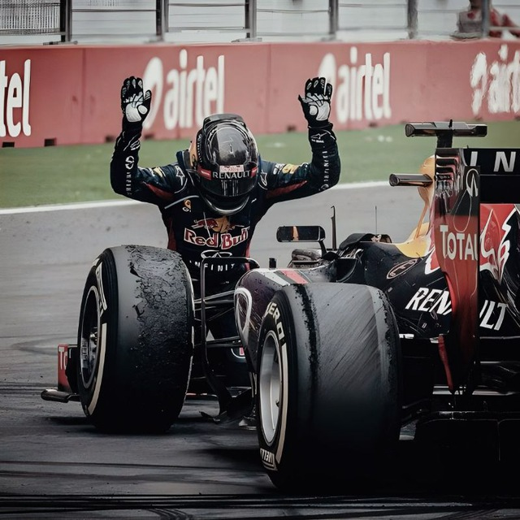

Engineered for speed. Designed for precision.
Driven by automation, obsessed with sleek design, and dedicated to solving challenging problems through clean frontend engineering.

Selected Work
Featured Projects
Technical Arsenal
Core Competencies
Systems & Security
Deep expertise in Linux environments, system-level architecture, and implementing robust cybersecurity protocols.
Backend & Cloud
Building scalable automated pipelines and managing high-performance environments on Google Cloud.
Frontend & Dev Tools
Crafting responsive, high-performance user interfaces and managing efficient developer workflows.
AI & Machine Learning
Leveraging artificial intelligence platforms to create predictive models and automated data pipelines.
App & Web Engineering
Compiling source code for custom Android ROMs and developing full-featured mobile & web applications.
UI / UX Design
Translating complex logic into intuitive, visually appealing interfaces using industry-standard design tools.
Endgame
Initiate Connection
Whether you have a challenging project, a high-performance role that needs filling, or just want to talk system architecture — my digital inbox is always open.
Designed & Engineered by Shanmukha Sai Chaitanya ©